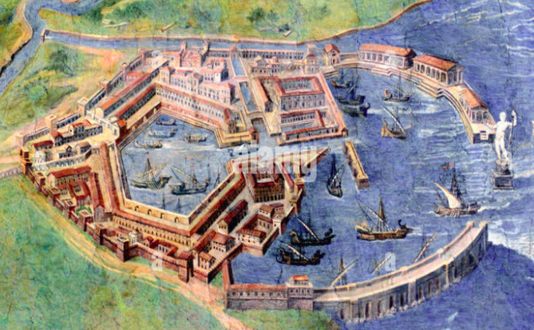

La sua storia
Il porto di Ostia, una metropoli di oltre un milione di abitanti, si trovò a dover gestire un’enorme logistica per l’approvvigionamento di beni essenziali come grano, olio, vino, tessuti e metalli. Tuttavia, il piccolo porto fluviale presso Ostia, alla foce del Tevere, era inadeguato per il traffico marittimo necessario, poiché non poteva ospitare navi di grande pescaggio.
Nel I secolo, Roma, una metropoli di oltre un milione di abitanti, si trovò a dover gestire un’enorme logistica per l’approvvigionamento di beni essenziali come grano, olio, vino, tessuti e metalli. Tuttavia, il piccolo porto fluviale presso Ostia, alla foce del Tevere, era inadeguato per il traffico marittimo necessario, poiché non poteva ospitare navi di grande pescaggio.
Questa limitazione costringeva a effettuare trasbordi rischiosi in mare aperto su imbarcazioni più piccole, con frequenti naufragi. Le merci potevano poi essere trasportate via fiume fino a Roma o sbarcate a Puteoli (Pozzuoli), a 250 km di distanza, per proseguire via terra.
Per risolvere questi problemi, gli imperatori Claudio e Traiano realizzarono un grande porto alla foce del Tevere: il Portus Romae, che divenne il fulcro commerciale e contribuì alla creazione di una vera e propria metropoli portuale.
